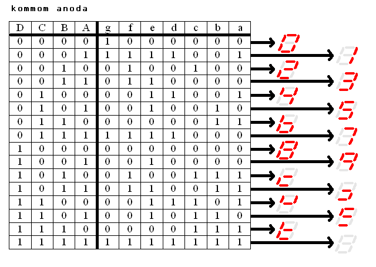
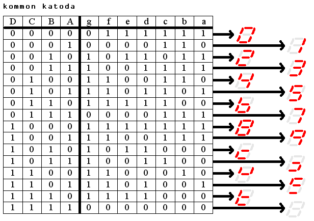
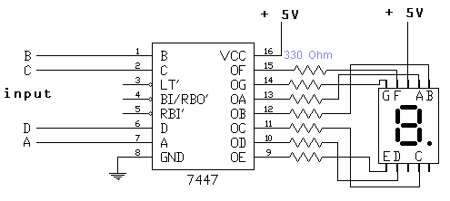
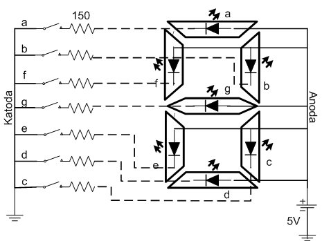
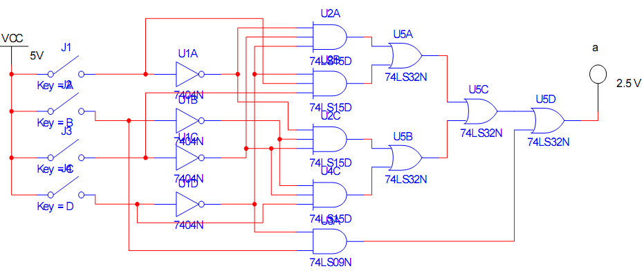
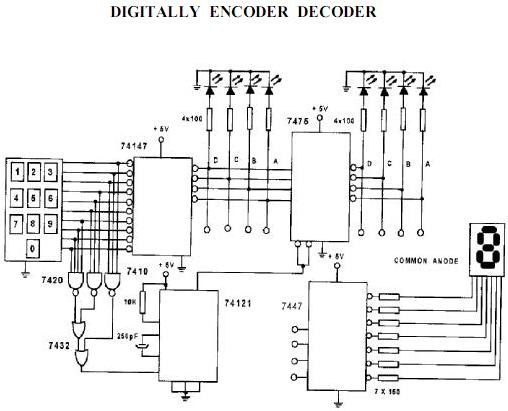
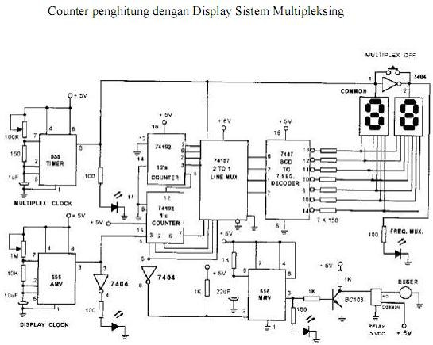

Pengaplikasian seven segment
Timer, penghitung, dan jam digital sederhana hampir selalu menampilkan angka lewat seven segment. Tulisan ini membahas cara kerjanya, jenis komponennya, dan satu video untuk membuat rangkaiannya. Di tengah tulisan ada simulator: ubah empat saklar BCD dan lihat segmen mana yang menyala.
Apa itu seven segment
Seven segment adalah tujuh LED berbentuk batang yang disusun membentuk angka 8, diberi label a sampai g. Sebagian model menambah satu LED kecil untuk titik desimal. Dengan menyalakan kombinasi tertentu, kita bisa membentuk angka 0 sampai 9. Semua LED di dalamnya berbagi satu kaki bersama (common), bisa anoda atau katoda.
Kenapa butuh decoder
Seven segment tidak mengerti bilangan biner. Kalau data yang kita punya adalah BCD empat bit (D, C, B, A), harus ada rangkaian yang menerjemahkannya menjadi tujuh sinyal untuk segmen a sampai g. Rangkaian itu disebut decoder BCD ke 7 segmen. Dalam materi encoder dan decoder STT-PLN, decoder dijelaskan sebagai rangkaian yang mengubah kode yang kurang dikenal manusia menjadi kode yang lebih mudah dibaca manusia. Angka di layar adalah contoh paling gampang.
Input 0000 menyalakan segmen a, b, c, d, e, f sehingga muncul angka 0. Input 0001 hanya menyalakan b dan c sehingga muncul angka 1. Begitu seterusnya sampai 1001 untuk angka 9. Enam kombinasi sisanya (1010 sampai 1111) tidak punya arti dalam BCD.
Simulasi: ubah saklar, lihat segmennya
Klik saklar D, C, B, A untuk mengubah nilai BCD. Pilih jenis display untuk melihat level output decoder pada tiap segmen. Tombol “Hitung otomatis” menghitung 0 sampai 9 berulang.
| BCD (DCBA) | Angka | Segmen menyala |
|---|
Bentuk angka 6 dan 9 bisa berbeda antar IC decoder. Tabel dan simulator memakai bentuk yang paling umum.
Common anode atau common cathode
Ini bagian yang sering membuat orang salah beli komponen. Pada seven segment common anode, semua anoda LED disatukan ke +5 V dan sebuah segmen menyala ketika outputnya low. Pada common cathode, semua katoda disatukan ke ground dan segmen menyala ketika outputnya high. Coba pindahkan tombol jenis display di simulator dan perhatikan level 0 dan 1 berbalik.
Tabel kebenaran berikut dari materi kuliah. Perhatikan kolom segmen g sampai a: nilainya saling berkebalikan antara dua jenis display.


IC 7447 punya output aktif low, jadi pasangannya common anode. Blog Teknik Elektro UNNES membahas hal yang sama, lalu bertanya bagaimana kalau yang ada hanya common cathode. Jawabannya ganti IC. Halaman element14 menyebut 74LS48 sebagai pilihan untuk display common cathode, dan salah satu panduan praktikum memakai CD4511 yang memang membutuhkan display common cathode.
Rangkaian dasarnya
Susunannya begini: empat saklar (atau sumber data BCD) masuk ke pin A, B, C, D di IC decoder. Tujuh output decoder dihubungkan ke segmen a sampai g lewat resistor pembatas arus. Common display dihubungkan ke catu daya. Di slide kuliah, rangkaian 7447 memakai resistor 330 ohm di tiap segmen, sedangkan skema peraga 7 segmen di slide lain memakai 150 ohm. Nilai yang tepat bergantung pada arus LED di datasheet display yang kamu pakai.
Berikut gambar asli dari materi kuliah. Pertama, rangkaian decoder BCD ke 7 segmen common anode dengan IC 7447 dan resistor 330 ohm di tiap segmen:

Kedua, susunan LED di dalam peraga 7 segmen, lengkap dengan resistor 150 ohm dan saklar tiap segmen:

Ketiga, contoh rangkaian decoder dari gerbang logika (74LS15, 74LS32, 74LS09) untuk menggerakkan satu segmen saja:

Komponen yang dibutuhkan untuk versi paling dasar: satu IC decoder, satu display, empat saklar, resistor pembatas arus untuk tiap segmen, dan catu daya 5 V.
Video cara pembuatannya
Satu video yang saya pilih adalah episode ke-53 The Learning Circuit dari element14 presents. Video ini menjelaskan langkah demi langkah cara menggerakkan seven segment dengan decoder.
- Durasi sekitar 17 menit, tayang perdana 4 September 2019.
- Memakai empat saklar untuk memasukkan angka BCD secara manual.
- Decoder SN74LS47N dan display common anode.
- Untuk display common cathode, dijelaskan alternatif 74LS48 dengan catu daya dibalik.
- Halaman proyek element14 memuat daftar komponen.
Ringkasan di atas disusun dari deskripsi video dan halaman proyeknya. Video diputar langsung di halaman ini, jadi tidak perlu pindah ke tab lain.
Contoh penerapan
Halaman Project14 dari element14 menyebut beberapa contoh proyek berbasis seven segment.
Materi kuliah punya dua rangkaian yang lebih lengkap. Yang pertama menggabungkan encoder dan decoder:

Yang kedua adalah counter dengan display multipleksing: dua digit (satuan dan puluhan) berbagi satu decoder 7447, dan multiplexer 2-ke-1 bergantian memilih digit yang tampil.

Di sisi mikrokontroler, Labcenter menjelaskan bahwa satu pin GPIO per segmen cepat menghabiskan pin. Solusinya multipleksing: segmen yang sama di tiap digit disambung ke pin yang sama, lalu digit dinyalakan bergantian dengan sangat cepat. Mata kita melihatnya seperti menyala bersamaan karena persistence of vision.
Uji pemahamanmu
Referensi
- element14, “How to Drive a 7-segment Display, The Learning Circuit 53” (halaman proyek dan daftar komponen): community.element14.com
- element14 presents, video YouTube yang dipakai di atas: youtube.com/watch?v=XCJqoae4hgY
- Labcenter Electronics, “Driving 7-Segment Displays” (multipleksing dan simulasi Proteus): labcenter.com
- Jurnal SENDIKFI Untirta, “Sandi BCD ke Peraga Seven Segment dengan Simulasi Proteus” (skema IC 7447/7448): jurnal.untirta.ac.id
- Modul praktikum Sistem Digital Telkom University, Modul 9 “Simulasi Rangkaian BCD-to-7 Segment” (gambar decoder dan tabel keluaran): dennydarlis.staff.telkomuniversity.ac.id
- Blog Teknik Elektro UNNES, “Dekoder TTL BCD ke 7 Segment”: blog.unnes.ac.id
- Raspi.tv, “How to drive a 7 segment display directly on Raspberry Pi in Python” (diagram pengkabelan common cathode): raspi.tv
- Max Teja Ajie Cipta W., M.Kom, materi kuliah “Encoder dan Decoder”, STT-PLN (slide 24 sampai 30: skema 7447, tabel kebenaran common anode dan katoda, rangkaian keypad dan counter multipleksing).